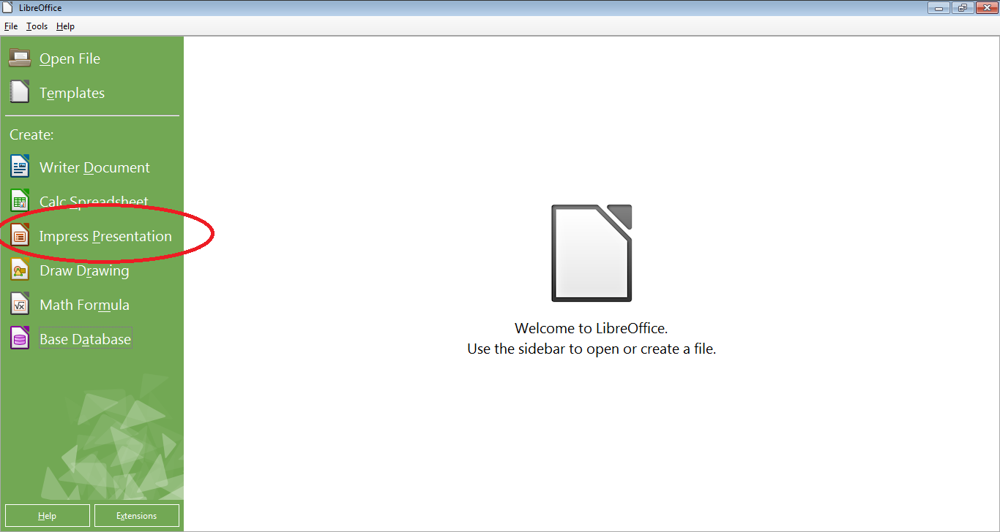
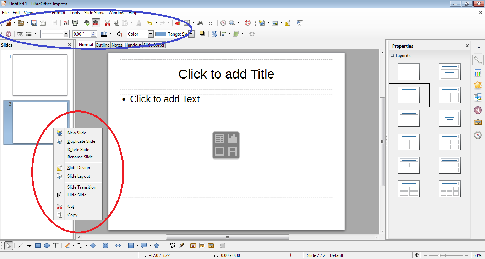

Powerpoints are very useful for presentations. You can make and edit them with LibreOffice Impress
Pre-requisites
LibreOffice
A presentation idea
Steps
Open LibreOffice.
Open the Impress program, as shown in Figure 1.
If you want to edit an existing presentation, select the "Open File" button instead.
In order to add a new slide or change the format of a given slide, right click on one of the slide previews to the left, then use the resulting menu, shown in red in figure 2.
Add text and other content to each slide as need be, formatting your presentation using the buttons shown in blue in figure 2.
Periodically save your presentation by pressing ctrl + "s" at the same time.
When finished, either exit LibreOffice by clicking the X at the upper right of the screen.
Figures

Figure 1: The LibreOffice main page, with the Impress button circled

Figure 2: A sample presentation with the format buttons circled in blue, and the slide change/addition menu circled in red